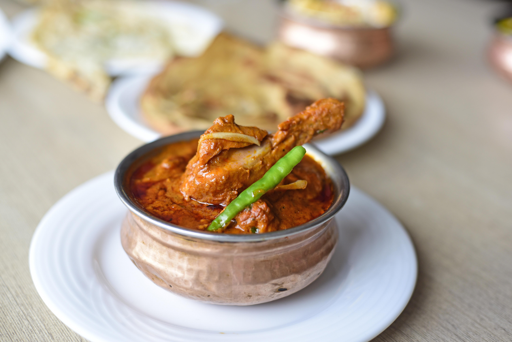

Qorma

Description
Korma (also spelled qorma) is a rich, mildly spiced South Asian curry. It features meat (usually chicken, lamb, or beef) or vegetables braised in a velvety gravy made from yogurt, caramelized onions, and ground nuts or seeds (such as cashews or almonds). It is aromatic, creamy, and gently spiced rather than fiercely hot
Ingredients
- Chicken: 2 lbs (approx. 1 kg) bone-in, skinless chicken pieces
- Oil/Ghee: 1/2 cup neutral oil or ghee
- Aromatics: 2 large onions (sliced), 1 tbsp ginger paste, 1 tbsp garlic paste
- Yogurt: 3/4 cup plain, full-fat yogurt (whisked smooth)
- Nut Paste: 1/2 cup soaked cashews or almonds blended with water
- Whole Spices: 2 bay leaves, 4 cardamom pods, 5 cloves, 1 cinnamon stick, 1/2 tsp cumin seeds
- Ground Spices: 2 tsp coriander powder, 1 tsp cumin powder, 1 tsp red chili powder, 1/2 tsp turmeric, salt to taste
- Finishing Touches: 1 tsp garam masala, 1 tsp kewra water, splash of heavy cream
Step-by-Step Instructions
- Brown the Onions: Heat oil or ghee, fry sliced onions until golden-brown, remove, let cool, and crush into a paste.
- Sauté Aromatics and Chicken: Fry whole spices for 1 minute in the same oil, add ginger-garlic paste, then sauté chicken until it changes color.
- Add Spices and Yogurt: Stir in ground spices, then slowly pour in whisked yogurt while stirring continuously to prevent curdling.
- Simmer the Curry: Mix in the crushed onions and nut paste, add 1 cup of warm water, cover, and simmer on low for 15-20 minutes.
- Finish and Serve: Stir in garam masala, kewra water, and optional heavy cream, then garnish and serve hot.
Home